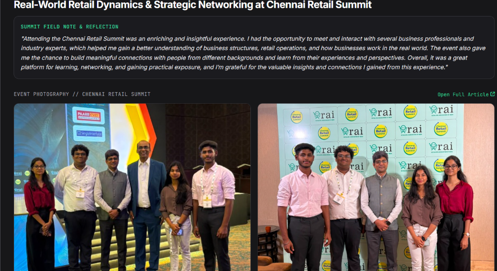

Real-World Retail Dynamics & Strategic Networking at the Chennai Retail Summit
Stepping out of the comfort zone, exploring modern business structures and retail operations with industry leaders, and kicking off the PRICE ProtoSem 20-week innovation journey.
"Attending the Chennai Retail Summit was an enriching and insightful experience. I had the opportunity to meet and interact with several business professionals and industry experts, which helped me gain a better understanding of business structures, retail operations, and how businesses work in the real world. The event also gave me the chance to build meaningful connections with people from different backgrounds and learn from their experiences and perspectives. Overall, it was a great platform for learning, networking, and gaining practical exposure, and I’m grateful for the valuable insights and connections I gained from this experience."
Moments from Chennai Retail Summit

Stage Interaction & RAI Summit Assembly
FIG 1Participating onstage alongside retail industry executives, event partners (Paarr Ever Supermarket & SingleInterface), and fellow cohort delegates.

Delegation & Collaborative Discourse
FIG 2Engaging in meaningful discussions with professionals and students from diverse academic and industry backgrounds at the summit.

Week 0 of PRICE ProtoSem at Forge Innovation & Ventures was a foundational start filled with learning, self-discovery, teamwork, and stepping out of the comfort zone:
Stepping out of personal comfort zones, meeting peers across business and engineering disciplines, and establishing collaborative synergy.
Hands-on rapid prototyping under strict time limits, teaching design thinking, rapid iteration, and structural failure analysis.
Visual storytelling and narrative structuring to communicate technical ideas, venture concepts, and personal vision clearly.
Personality profiling assessments, team strengths calibration, and executive LinkedIn presence optimization.
Strategic Perspectives on Modern Retail
A special highlight was the inaugural session by Mr. Kumar Rajagopalan, CEO of the Retailers Association of India (RAI), who shared insightful perspectives on the retail industry, consumer behavior trends, and retail tech opportunities.